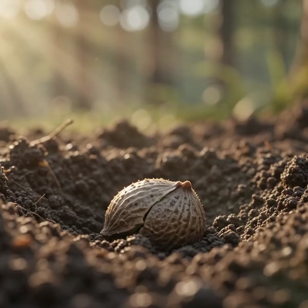
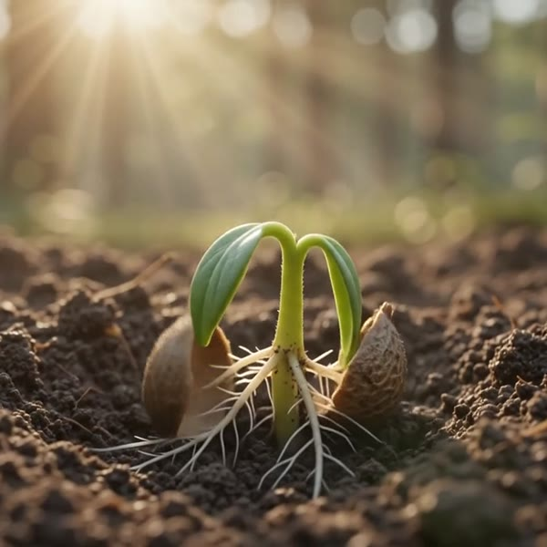

Stage 01 — Dormancy
Every rose begins
underground.
Sealed in its husk, the seed waits for warmth. Nothing about this moment looks like a flower — that's the point.
Stage 01 — Dormancy
Sealed in its husk, the seed waits for warmth. Nothing about this moment looks like a flower — that's the point.
Stage 02 — Emergence
Before a single petal, the plant spends its energy underground — a structure built to outlast the bloom it will eventually grow.
Stage 03 — Formation
Colour arrives before the flower opens. What looks sealed shut is already fully formed, folded tight, waiting on daylight.
Stage 04 — Bloom
This is the rose we ship — grown on camera, from a single traceable seed, so you can see exactly what "fresh" means.
Pre-order this bloomField notes
We don't photograph roses at the flower market.
We plant the seed and point a camera at it — for ten weeks, without a single cut.
Most "fresh" flowers have already lived a week in transit by the time they reach a doorstep. Ours haven't gone anywhere. Every Bloom Box begins as a single seed, propagated in soil we control, and documented in daily footage from germination to first colour.
What you're scrolling through above is real, unedited growth — the same footage we use to decide the exact day a stem is ready to cut. No two timelines are identical, which is the entire argument for growing your own record of one.
The growth journal
Every still below is pulled from the same uninterrupted shot — timestamped the moment it was captured.


Why it's different
Every plant is filmed from germination, so the flower you receive has a documented history — not a supplier's word for it.
Stems leave the soil within hours of opening, not days after a warehouse pickup. That difference is most of what "freshness" means.
Regional propagation beds keep the trip from soil to door under a day — shorter than most flowers spend in cold storage alone.
Autumn drop — limited beds
Pre-order today and we'll start your timelapse the week your bed is planted. You'll watch it grow before it ever ships.
Ships within 48 hours of first bloom. Fully refundable before your bed is planted.